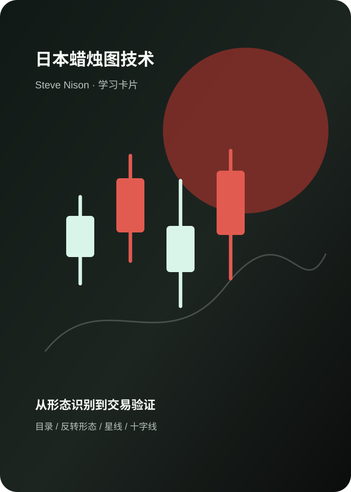

Daily Market Review
把市场噪声整理成可阅读的线索。
聚合全球重要指数、行业表现、基本面新闻、政策线索和宏观数据日历。
指数涨跌幅
A股 · 2026-07-08行业涨跌幅
Top movers宏观数据公布日历
参照经济数据日历结构基本面新闻
Fundamental政策面新闻
Policy数据源：当前 UI 使用示例行情结构；实时数据接口位已预留。
Industry Lens
半导体
数据更新：2026-07-08受益于 AI 算力需求扩张、国产替代推进与库存周期改善，行业年内表现领先。
1 / 4

Reading Notes
日本蜡烛图技术
以目录结构和学习摘要的方式阅读蜡烛图技术，避免直接公开整本书原文。
1 / 5